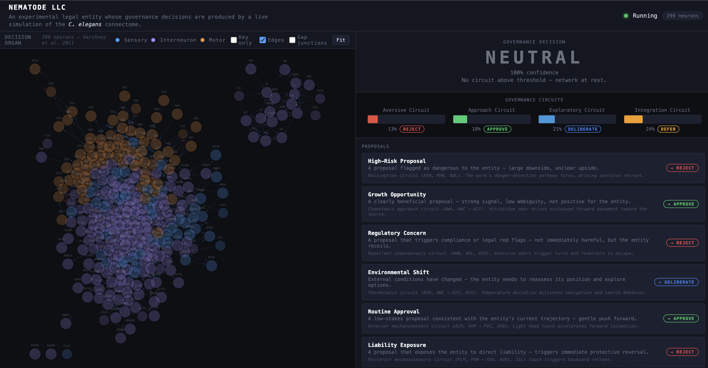

Nematode LLC uses a C. elegans flatworm connectome as the governance organ for an LLC, exploring legal life-forms and applications of biological distributed intelligence in governance.
Drawing from the literature of computational neuroscience, fitness landscape ecology, and collective decision theory, it explores mappings between complex decision-making contexts in operating agreements and governance as the navigation of attraction and repulsion landscapes. Every operating agreement encodes a topology — approval thresholds, veto rights, quorum rules are gradient fields that make certain decisions easy and others nearly impossible. Nematode LLC makes this literal by routing governance decisions through a 299-neuron dynamical system whose approach and avoidance circuits have been mapped at single-synapse resolution.
The flatworm does not deliberate — it navigates. The claim is that navigation through a well-structured decision landscape is a more honest account of what governance has always been. If a 302-neuron organism can produce structurally appropriate responses to the canonical dilemmas of collective decision-making, then the human complexity we attribute to governance may be less about the decision procedure and more about the landscape it operates on. And if the landscape is where the intelligence lives, the question of who or what traverses it becomes genuinely open.